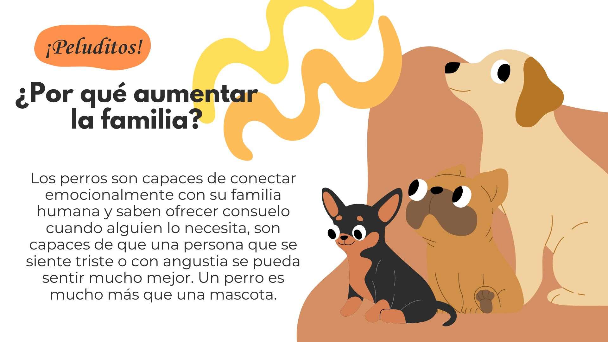

    
    <div class="tarjeta mt-3 p-5 m-5 width: 20%">
        
      <div class="card-body">
        <h5 class="card-titulo"><strong>¿Cómo funciona adoptar con Peluditos?</strong></h5>
       <p class="card-texto">Si tienes un refugio, eres rescatista independiente o acabas de encontrar una mascota abandonada y necesitas darla en adopción, contáctanos es muy sencillo, Deberás enviarnos al correo las fotos e información de los perros en adopción, diligenciar el formulario de registro con tu información y nos encargaremos de que tus mascotas puedan ser encontradas fácilmente por los cientos de visitantes de Peluditos.</p>
      </div>
    </div>
      
      

